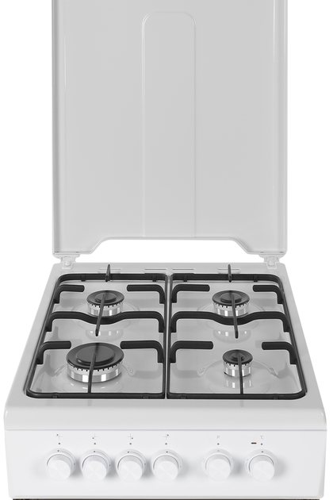
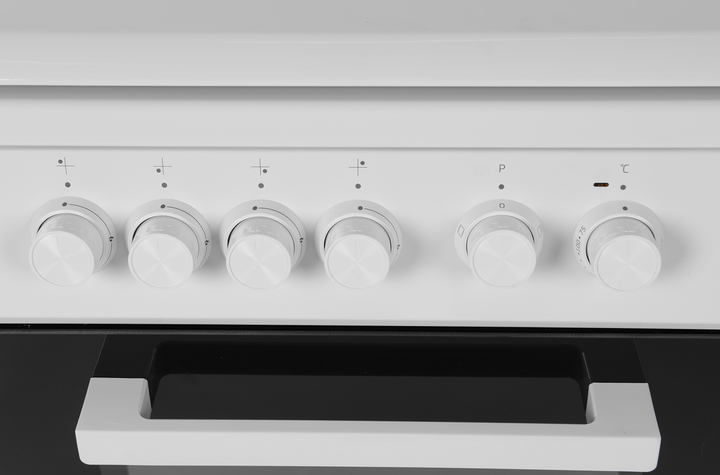
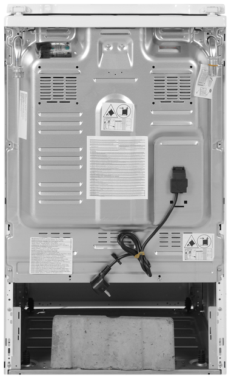
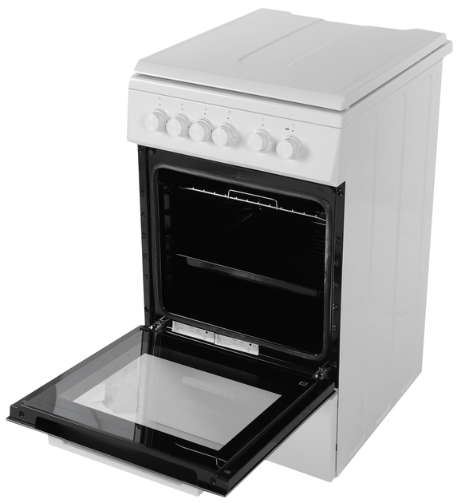

Кухонна плита BEKO FSS52020DW
Ціна: 10 000 грн
Опис
Кухонна плита BEKO FSS52020DW ...
Опис
Кухонна плита BEKO FSM62120DW...
Характеристики
- Максимальне завантаження: 7 кг
- Клас енергоефективності: A+++
- Швидкість віджиму: 1200 об/хв
- Тип завантаження: фронтальне
Ідеальне прання будь-якої тканини з 6 Motion
Технологія 6 Motion — це шість різних схем руху барабана, які забезпечують максимально делікатне та ефективне прання. (...Читати далі) Складні забруднення видаляються без слідів, а одяг не пошкоджується. Додаткові пояснення про технологію 6 Motion: кожен рух барабана виконується в залежності від типу тканини та рівня забруднення, що дозволяє досягати максимально ефективного результату без шкоди для речей.
Додаткові фото



